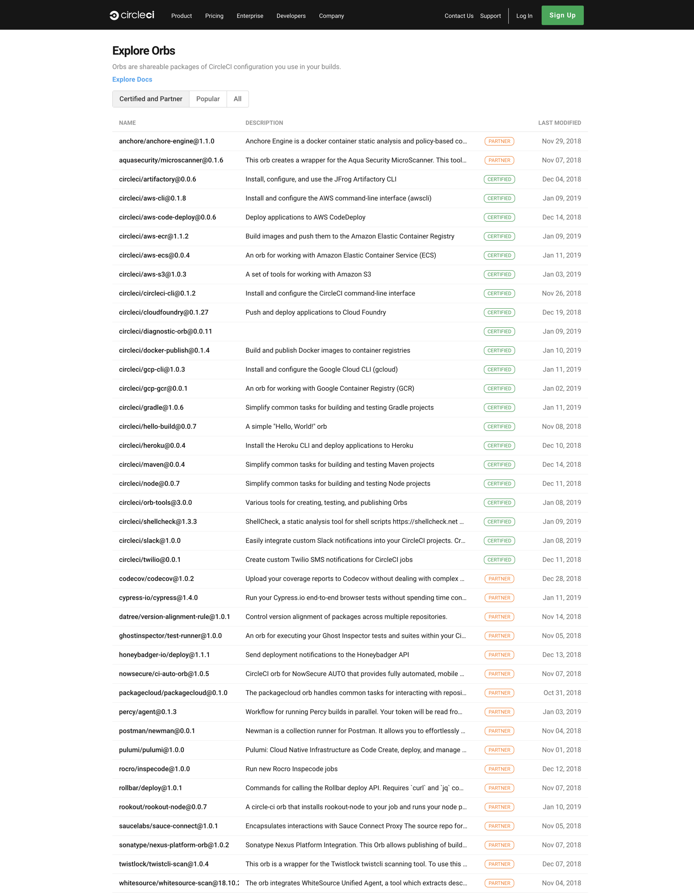

Orbs の作成
はじめに
Orbs は、複数のプロジェクト間で共有できる CircleCI 構成の再利用可能パッケージです。カプセル化およびパラメーター化されたコマンド、ジョブ、および Executor を作成して、複数のプロジェクトで使用できます。
Orbs は、2.1 .circleci/config.yml ファイルのトップレベルにある orbs キーを通して構成内で使用されます。
Orbs クイックスタート
最初の Orbs をパブリッシュする手順を以下に簡単に説明します。
- 名前空間を要求します (まだ持っていない場合)。 以下がその例です。
circleci namespace create sandbox github CircleCI-Public
上記の例では、GitHub 組織 CircleCI-Public にリンクされる名前空間 sandbox を作成しています。
メモ：CircleCI CLI を通して名前空間を作成する場合は、VCS プロバイダーを指定してください。 指定する組織は、既に CircleCI CLI に追加されている必要があります。 また、組織設定の [Uncertified Orbs (未承認 Orbs)] を有効にする必要があります。
メモ：いったん要求した名前空間を削除することや、名前を変更することはできません。
メモ：組織オーナーのみが名前空間を作成できます。
-
名前空間内に Orb を作成します。 たとえば
circleci orb create sandbox/hello-worldのようになります。 -
ファイルに Orb のコンテンツを作成します。 通常この手順は Orb 用に作成された Git リポジトリでコードエディタを使用して行います。しかしここでは例として、以下のような最小限の Orb で /tmp/orb.yml ファイルを作成することにします。
echo '{version: "2.1", description: "a sample orb"}' > /tmp/orb.yml -
CLI を使用して、このコードが有効な Orb であることをバリデーションします。 たとえば、上記のパスを使用する場合は以下のようになります。
circleci orb validate /tmp/orb.yml -
Orb の dev バージョンをパブリッシュします。 上記の Orb の場合は以下のようになります。
circleci orb publish /tmp/orb.yml sandbox/hello-world@dev:first -
Orb を本稼働にプッシュする準備が整ったら、circleci orb publish を使用して手動でパブリッシュするか、dev バージョンから直接プロモートすることができます。 上記の例の場合、新しい dev バージョンが 0.0.1 になるようにインクリメントするには、以下のコマンドを使用することができます。
circleci orb publish promote sandbox/hello-world@dev:first patch -
これで、本稼働バージョンの Orb が変更不可形式でパブリッシュされ、ビルドで安全に使用できるようになりました。 以下のコマンドを使用して、Orb のソースをプルすることができます。
circleci orb source sandbox/hello-world@0.0.1
Orb のパブリッシュプロセス
Orbs を使用する前に、Orbs パブリッシュプロセス全体について大まかに把握しておくと、理解が深めるでしょう。 下図は Orbs パブリッシュプロセスを図式化したものです。 
ステップ 1 - CircleCI CLI を準備する
orbs-tool Orb を使用して Orb パブリッシュの CI/CD を行うことはできますが、CircleCI CLI を使用した方がより直接的かつ反復的に Orbs のビルド、パブリッシュ、およびテストを行うことができます。 詳しい手順は、このページの「新しい CircleCI CLI の取得」セクションに記載されています。
ステップ 2 - CLI が正しくインストールされていることを検証する
CircleCI CLI を設定したら、Orbs を使用する前に、CLI が正しくインストールされ、適切に更新および設定されていることを検証します。
ステップ 3 - バージョンプロパティを Orbs 互換 2.1 にバンプする
ビルド設定をバリデーションしたら、バージョンプロパティを 2.1 にバンプして、Orbs の使用と互換性を持たせます。 バージョンプロパティをバンプする方法については、このページの「バージョンプロパティを Orb 互換 2.1 にバンプする」セクションを参照してください。
ステップ 4 - インラインテンプレートを使用して新しい Orb を作成する
インライン Orbs は既存の設定から参照できるため、最初はインライン Orbs を使用する方法が最も簡単です。 Orb のオーサリングに必須ではないものの、インライン Orbs を使用することによってプロセスを簡素化できるため、すばやく簡単に Orbs をオーサリングするには理想的なアプローチです。
ステップ 5 - Orb を設計する
インラインテンプレートを使用するか、インラインテンプレートとは別に Orb をオーサリングするかに応じて、いくつかのエレメント (ジョブ、コマンド、Executor) を Orb に追加します。 これらの Orb エレメントの詳細については、「Orbs を使う」ページの「コマンド」、「ジョブ」、「Executors」の各セクションを参照してください。
ステップ 6 - Orb をバリデーションする
Orb のオーサリングが終了したら、CLI から validate コマンドを実行するだけです。 CircleCI は、circleci/orb-tools Orb など、Orb をバリデーションするためのさまざまなツールを提供しています。 circleci/orb-tools Orb の使用方法については、このページの「Orb をバリデーションおよびパブリッシュする」を参照してください。
ステップ 7 - Orb をパブリッシュする
Orb パブリッシュプロセスの最終ステップは、circleci/orb-tools Orb の orb-tools/publish CLI コマンドを使用して Orb をパブリッシュすることです。 dev Orb バージョンでは、1つの Orb 名の複数バージョンをパブリッシュできることに注意してください (dev Orbs は可変形式)。
このコマンドの詳細については、このページの「orb-tools/publish」セクションを参照してください。
概要
以降では、以下のトピックについてさらに詳しく説明します。
- Orbs のバージョニングと設計
- テンプレートを使用して
config.ymlファイルにインライン Orb を作成する方法 - CircleCI Orbs レジストリに Orb を作成、バリデーション、パブリッシュする方法
承認済み Orbs とは、CircleCI がビルドまたはレビューし、CircleCI プラットフォームの機能の一部として承認した Orbs です。 バージョン 2.1 以上の設定ですべてのプロジェクトに承認済み Orbs を使用することができます。
サードパーティ Orbs とは、CircleCI のユーザーまたは CircleCI コミュニティの他のメンバーによってパブリッシュされた Orbs です。 ユーザーが Orbs をパブリッシュしたり、プロジェクトでサードパーティ Orbs を使用したりするには、[Settings (設定)] タブの [Security (セキュリティ)] にある [Orb Security Settings (Orb セキュリティ設定)] で、組織管理者がサードパーティ製ソフトウェアの使用に関する条項に同意し、オプトインする必要があります。
メモ：サードパーティ Orbs をパブリッシュまたは使用するために必要なセキュリティ設定の変更は、組織管理者のみが行うことができます。
メモ：現在、プライベート CircleCI Server で Orbs はサポートされていません。
Orbs でのセマンティックバージョニング
Orbs は、3つの数字による標準的なセマンティックバージョニングシステムを使用してパブリッシュされます。
- メジャー
- マイナー
- パッチ
Orb オーサーは、セマンティックバージョニングに従う必要があります。 config.yml 内では、ワイルドカードでバージョン範囲を指定して Orbs を解決することもできます。 また、特殊な文字列 volatile を使用して、ビルド実行時点の最大のバージョン番号をプルできます。
たとえば、mynamespace/some-orb@8.2.0 が存在し、8.2.0 の後に mynamespace/some-orb@8.1.24 と mynamespace/some-orb@8.0.56 がパブリッシュされた場合、volatile は、引き続き mynamespace/some-orb@8.2.0 を最大のセマンティックバージョンとして参照します。
以下に Orb バージョン宣言の例を挙げ、その意味を説明します。
-
circleci/python@volatile- ビルドがトリガーされた時点でレジストリにある最大の Python Orb バージョンを使用します。 通常、これは最も最近パブリッシュされ、最も安定性が低い Python Orb です。 -
circleci/python@2- Python Orb バージョン 2.x.y のうち、最新のバージョンを使用します。 -
circleci/python@2.4- Python Orb バージョン 2.4.x のうち、最新のバージョンを使用します。 -
circleci/python@3.1.4- 指定されているとおりバージョン 3.1.4 の Python Orb を使用します。
開発バージョンの使用
すべての本稼働 Orbs は組織オーナーによって安全にパブリッシュできますが、開発用 Orbs はチームのオーナー以外のメンバーにも Orbs をパブリッシュする方法を提供します。 本稼働 Orbs とは異なり、開発用 Orbs は変更も可能なので、アイデアをすばやく繰り返し組み込みたいときには理想的です。
本稼働 Orbs ではワイルドカードによるセマンティックバージョン参照を使用できますが、開発バージョンは、mynamespace/myorb@dev:mybranch. などの完全修飾名で参照する必要があります。 開発バージョンには便利な省略表記はありません。
メモ：dev バージョンは変更可能で、有効期限があり、90 日後に削除されます。したがって、本稼働ソフトウェアは開発バージョンに依存しないようにすること、また Orb の開発が活発に行われている間にのみ使用することを強くお勧めします。 チームの組織メンバーは、別のメンバーのコンフィグをコピー＆ペーストするのではなく、開発用 Orb に基づいて Orb のセマンティックバージョンをパブリッシュできます。
Orbs の設計
独自の Orbs を設計する際は、以下の要件を満たしてください。
- Orbs は常に
descriptionを使用する - ジョブ、コマンド、Executors、およびパラメーターのdescriptionキーで、使用方法、前提、および技術を説明してください。 - コマンドを Executors に合わせる - コマンドを提供する場合は、それらを実行する Executors を 1つ以上提供します。
- Orb には簡潔な名前を使用する - コマンドやジョブの使用は常に Orb のコンテキストに依存するため、ほとんどの場合 “run-tests” のような一般的な名前を使用できます。
- 必須パラメーターと オプションパラメーター - 可能な限り、パラメーターに安全なデフォルト値を指定してください。
- ジョブのみの Orbs を使用しない - ジョブのみの Orbs は柔軟性に欠けます。 そうした Orbs が適切な場合もありますが、ユーザーが独自のジョブでコマンドを使用できないことを不満に思う可能性があります。 ジョブを起動する前後のステップはユーザーにとって 1つの回避策になります。
-
stepsパラメーターは強力 - ユーザーから提供されるステップをラップすることで、キャッシュ戦略やさらに複雑なタスクなどをカプセル化および容易化することができ、ユーザーに大きな価値をもたらします。
Orbs 内のコマンド、Executors、パラメーターの詳細と例については、「コンフィグの再利用」を参照してください。
独自の Orb を開発する際は、インライン Orb を作成すると便利なことがあります。 次のセクションでは、独自のインライン Orb の記述方法について説明します。
インライン Orbs の作成
インライン Orbs は、Orb の開発中に手軽に使用できます。また、特に後で他のユーザーと Orb を共有する場合に、長い設定内のジョブやコマンドの名前空間を作成するために便利です。
インライン Orbs を記述するには、設定内の orbs 宣言にその Orb のキーを置き、その下に Orb エレメントを置きます。 たとえば、1つの Orb をインポートしたうえで、別の Orb をインラインでオーサリングする場合、Orb は以下のようになります。
version: 2.1
description: # この Orb の目的
orbs:
my-orb:
orbs:
codecov: circleci/codecov-clojure@0.0.4
executors:
specialthingsexecutor:
docker:
- image: circleci/ruby:1.4.2
commands:
dospecialthings:
steps:
- run: echo "We will now do special things"
jobs:
myjob:
executor: specialthingsexecutor
steps:
- dospecialthings
- codecov/upload:
path: ~/tmp/results.xml
workflows:
main:
jobs:
- my-orb/myjob
上記の例では、my-orb のコンテンツはマップなので、my-orb のコンテンツはインライン Orb として解決されます。一方、codecov のコンテンツはスカラー値なので、これは Orb URI と見なされます。
インラインテンプレートの例
Orb をオーサリングする場合、このサンプルテンプレートを使用すると、必要なすべてのコンポーネントを持つ新しい Orb をすばやく簡単に作成できます。 この例には、Orbs の 3つのトップレベルコンセプトが含まれています。 どのような Orb もインライン Orb 定義で表現できますが、一般的には、1つのインライン Orb を繰り返し使用し、circleci config process .circleci/config.yml によって Orb の使用方法が目的に合うかをチェックする方が簡単です。
version: 2.1
description: これはインラインジョブです
orbs:
inline_example:
jobs:
my_inline_job:
parameters:
greeting_name:
description: # わかりやすい説明
type: string
default: olleh
executor: my_inline_executor
steps:
- my_inline_command:
name: <<parameters.greeting_name>>
commands:
my_inline_command:
parameters:
greeting_name:
type: string
steps:
- run: echo "hello <<parameters.greeting_name>>, from the inline command"
executors:
my_inline_executor:
parameters:
version:
type: string
default: "2.4"
docker:
- image: circleci/ruby:<<parameters.version>>
workflows:
build-test-deploy:
jobs:
- inline_example/my_inline_job:
name: mybuild # ベストプラクティスとして各 Orb ジョブに名前を付けることをお勧めします
- inline_example/my_inline_job:
name: mybuild2
greeting_name: world
Orbs の使用例
examples スタンザは、バージョン 2.1 以上の設定で使用可能です。
Orb のオーサーとして、CircleCI コンフィグファイルで Orb を使用する例をドキュメントにすることができます。これにより、新しいユーザーに入門ガイドを提供できるだけでなく、より複雑なユースケースの具体例を示すことができます。
Orb のオーサリングを完了し、パブリッシュすると、その Orb は Orb レジストリにパブリッシュされます。 以下のように、新しく作成された Orb が Orb レジストリに表示されます。

単純な例
以下は、使用可能な Orb の例です。
version: 2.1
description: foo orb
commands:
hello:
description: ユーザーに丁寧に挨拶します
parameters:
username:
type: string
description: 挨拶するユーザーの名前
steps:
- run: "echo Hello << parameters.username >>"
必要に応じて、以下に示す例のように、この Orb に examples スタンザを追加することができます。
version: 2.1
examples:
simple_greeting:
description: Anna という名前のユーザーに挨拶します
usage:
version: 2.1
orbs:
foo: bar/foo@1.2.3
jobs:
build:
machine: true
steps:
- foo/hello:
username: "Anna"
examples は、simple_greeting と同じレベルに複数のキーを持つことができ、複数の例を追加できることに注意してください。
期待される使用結果
オプションの result キーを使用して、上記の使用例を補完することができます。このキーは、これらのパラメーターで Orb を拡張した後の設定がどのようになるかを示します。
version: 2.1
examples:
simple_greeting:
description: Anna という名前のユーザーに挨拶します
usage:
version: 2.1
orbs:
foo: bar/foo@1.2.3
jobs:
build:
machine: true
steps:
- foo/hello:
username: "Anna"
result:
version: 2.1
jobs:
build:
machine: true
steps:
- run:
command: echo Hello Anna
workflows:
version: 2
workflow:
jobs:
- build
使用例の構文
トップレベルの examples キーはオプションです。 その下にネストされた使用例マップは、以下のキーを持つことができます。
- description：例の目的をユーザーにわかりやすく説明する文字列 (オプション)
- usage：Orb の使用例を含む有効なコンフィグマップ全体 (必須)
- result：指定されたパラメーターで Orb を拡張した結果を具体的に示す有効なコンフィグマップ全体 (オプション)
Orb のパブリッシュ
このセクションでは、ツールの使用方法と、独自の Orbs をオーサリングして Orb レジストリにパブリッシュするまでの流れを説明します。
Orbs は、config.yml ファイルにインラインでオーサリングするか、別途オーサリングした後に、複数のプロジェクト間で再利用するために Orb レジストリにパブリッシュすることができます。
[警告] Orbs は、常にグローバルに読み取り可能です。 パブリッシュされたすべての Orbs (本稼働および開発用) は、だれでも読み取って使用することができます。 これは組織のメンバーに限定されません。 通常 CircleCI は、シークレットやその他の機密の変数を設定に含めないように強く推奨しています。 代わりに、コンテキストまたはプロジェクト環境変数を使用し、Orbs 内でそれらの環境変数の名前を参照してください。
前提条件
Orb をパブリッシュする前に、最初に新しい [Code Sharing Terms of Service (コード共有利用規約)] をオプトインし、組織の Orb パブリッシュを有効にします。
メモ：組織オーナーのみが [Code Sharing Terms of Service (コード共有利用規約)] をオプトインできます。 組織オーナーは、組織の [Settings (設定)] タブに移動し、[Security (セキュリティ)] ページでフォームに入力します。
名前空間
名前空間は、一連の Orbs を編成するために使用されます。 各名前空間はレジストリ内に一意で変更不可の名前を持ちます。また、名前空間内の各 Orb は一意の名前を持ちます。 たとえば、circleci/rails Orb と hannah/rails という名前の Orb は、別々の名前空間にあるため、レジストリ内で共存できます。
名前空間は組織に所有されます。
デフォルトでは、組織は名前空間を 1つだけ要求できるように制限されています。 これは、名前空間の占拠や紛らわしさを制限するためのポリシーです。 複数の名前空間が必要な場合は、CircleCI のアカウントチームにお問い合わせください。
開発用および本稼働 Orbs
Orb の各バージョンは、開発バージョンまたは本稼働バージョンとしてレジストリに追加されます。 本稼働バージョンは、1.5.3 のように常にセマンティックバージョンです。一方、開発バージョンは文字列タグを付けることができ、dev:myfirstorb のように常に dev: プレフィックスが付きます。
開発用および本稼働 Orb のセキュリティプロファイル
- 組織オーナーのみが本稼働 Orbs をパブリッシュできます。
- 組織の任意のメンバーが名前空間に開発用 Orbs をパブリッシュできます。
- 組織オーナーは、任意の開発用 Orb をセマンティックバージョンの本稼働 Orb にプロモートできます。
開発用および本稼働 Orb の維持特性と可変特性
- 開発用 Orbs は変更可能で、有効期限があります。 Orb がパブリッシュされた名前空間を所有する組織のメンバーは、だれでも開発用 Orb を上書きできます。
- 本稼働 Orbs は変更不可で、永続的です。 特定のセマンティックバージョンで本稼働 Orb をパブリッシュすると、そのバージョンの Orb のコンテンツは変更できません。 本稼働 Orb のコンテンツを変更するには、一意のバージョン番号で新しいバージョンをパブリッシュする必要があります。 Orbs を本稼働にパブリッシュする際は、
circleciCLI でorb publish incrementコマンドやorb publish promoteコマンドを使用することをお勧めします。
開発用および本稼働 Orbs のバージョニングセマンティック
開発用 Orbs には、dev:<< your-string >> 形式のタグが付きます。 本稼働 Orbs は、常にセマンティックバージョニング (“semver”) スキームを使用してパブリッシュされます。
開発用 Orbs に指定できる文字列ラベルには以下の制限があります。
- 空白文字以外の最大 1,023 文字
有効な開発用 Orb タグの例
- 有効
“dev:mybranch” “dev:2018_09_01” “dev:1.2.3-rc1” “dev:myinitials/mybranch” “dev:myVERYIMPORTANTbranch”
- 無効
“dev: 1” (スペースは使用不可) “1.2.3-rc1” (先頭に “dev:” が必要)
本稼働 Orbs では X.Y.Z 形式を使用します。X は「メジャー」バージョン、Y は「マイナー」バージョン、Z は「パッチ」バージョンです。 たとえば、2.4.0 は、メジャーバージョン 2、マイナーバージョン 4、パッチバージョン 0 を意味します。
厳密に強制されているわけではありませんが、本稼働 Orbs をバージョニングする際は、メジャー、マイナー、パッチの標準セマンティックバージョニング規則を使用することをお勧めします。
- メジャー：互換性がない API の変更を行う場合
- マイナー：下位互換性を維持しながら機能を追加する場合
- パッチ：下位互換性を維持しながらバグを修正する場合
Orb 内での Orbs の使用と登録時解決
Orb 内で orbs スタンザを使用できます。
本稼働 Orb リリースは変更不可なので、Orb 依存関係の解決は、ビルドの実行時ではなく Orb の登録時にすべて行われます。
たとえば、biz/baz@volatile をインポートする orbs スタンザを含んだ Orb foo/bar がバージョン 1.2.3 でパブリッシュされるとします。 foo/bar@1.2.3 を登録する時点で、biz/baz@volatile が最新バージョンとして解決され、そのエレメントがパッケージバージョンの foo/bar@1.2.3 に直接インクルードされます。
biz/baz が 3.0.0 に更新されても、foo/bar が 1.2.3 よりも上のバージョンでパブリッシュされるまで、foo/bar@1.2.3 を使用しているユーザーには biz/baz@3.0.0 の変更が反映されません。
メモ：Orb エレメントは他の Orbs のエレメントを使用して直接構成できます。 たとえば、以下の例のような Orb を使用できます。
version: 2.1
orbs:
some-orb: some-ns/some-orb@volatile
executors:
my-executor: some-orb/their-executor
commands:
my-command: some-orb/their-command
jobs:
my-job: some-orb/their-job
another-job:
executor: my-executor
steps:
- my-command:
param1: "hello"
本稼働 Orbs の削除
CircleCI では基本的に、グローバルに読み取り可能としてパブリッシュされた本稼働 Orbs を削除しないように要請しています。これは、設定のソースとしての Orb レジストリの信頼性およびすべての Orb ユーザーからの信頼を損なうことになるためです。
緊急の理由で Orb を削除する必要性が生じた場合は、CircleCI にご連絡ください (メモ：セキュリティ上の懸念から削除を行う場合は、CircleCI Security の Web ページを使用して、情報開示の責任を果たす必要があります)。
CLI を使用した Orbs の作成とパブリッシュ
circleci CLI には、Orb パブリッシュパイプラインを管理するコマンドがいくつかあります。 CLI について学習するなら、CLI をインストールして circleci help を実行してみるのが一番の早道です。 詳細については、「CircleCI CLI の使用」を参照してください。 以下に、Orbs のパブリッシュと特に関連性の高いコマンドをいくつか示します。
circleci namespace create <name> <vcs-type> <org-name> [flags]circleci orb create <namespace>/<orb> [flags]circleci orb validate <path> [flags]circleci orb publish <path> <namespace>/<orb>@<version> [flags]circleci orb publish increment <path> <namespace>/<orb> <segment> [flags]circleci orb publish promote <namespace>/<orb>@<version> <segment> [flags]
CLI のすべてのヘルプコマンドの一覧は、CircleCI CLI ヘルプで参照できます。
CircleCI Orb の作成
このセクションでは、独自の Orb を記述してパブリッシュする方法を深く理解できるように、Orb の作成とパブリッシュのプロセスについて順を追って説明します。 以下の例を通してプロセスをステップバイステップで確認することで、CircleCI の要件に準拠すると共にユーザー独自のニーズも満たす Orb を記述できるようになります。
以下の各セクションで、Orb のオーサリングとパブリッシュのプロセスをステップごとに説明します。
- CircleCI の初期前提条件を満たす
- 独自の Orb をオーサリングする
- Orb をバリデーションおよびパブリッシュする
CircleCI の初期前提条件を満たす
独自の Orb の作成を開始する前に、その Orb が CircleCI プラットフォームで動作し、正しいフォーマットと構造を持つことを確認する手順をいくつか実行する必要があります。
CircleCI の設定
プロジェクトの CircleCI アプリケーションの [Settings (設定)] ページで、ビルド処理が有効になっている必要があります (デフォルトではすべての新しいプロジェクトに対して有効)。 また、組織オーナーが CircleCI アプリケーションの [Security (セキュリティ)] ページの [Settings (設定)] タブで、組織内の未承認 Orbs の使用をオプトインしている必要があります。
新しい CircleCI CLI の取得
CircleCI プラットフォームでは、CircleCI CLI を使用して Orbs を記述できます。 CLI を使用する場合は、既存の CircleCI CLI ツールとコマンドを使用できるため、Orbs の記述プロセスが効率化されます。
CLI の初回インストール
新しい circleci CLI を初めてインストールする場合は、以下のコマンドを実行します。
curl -fLSs https://circle.ci/cli | bash
デフォルトでは、circleci アプリケーションは /usr/local/bin directory にインストールされます。 /usr/local/bin への書き込みアクセス権を持っていない場合は、sudo コマンドを使用してください。 または、bash の実行時に DESTDIR 環境変数を定義すると、CLI を別の場所にインストールできます。
curl -fLSs https://circle.ci/cli | DESTDIR=/opt/bin/bash
Homebrew
Homebrew を使用する場合は、以下のコマンドを実行します。
brew install circleci
Snapcraft
以下のコマンドを実行すると、Snapcraft を使用して CLI をインストールできます。
sudo snap install circleci
既存の CLI からのアップグレード
以前のバージョンの CircleCI を使用しており、現在 0.1.6 よりも古いバージョンを実行している場合は、以下のコマンドを実行して CLI を最新のバージョンにアップグレードします。
circleci update
circleci switch
書き込みアクセス権を持っていない場合は、sudo コマンドを使用してください。 これで、CLI が /usr/local/bin ディレクトリにインストールされます。
インストール後の CircleCI CLI の更新
CircleCI には、組み込みのバージョン管理システムが付属しています。 CLI をインストールした後に、CLI にインストールする必要があるアップデートの有無を確認するには、以下のコマンドを実行します。
circleci update check
circleci update install
CircleCI CLI の設定
CircleCI CLI のインストールが完了したら、CLI を使用するための設定を行います。 CLI を設定するプロセスは単純で、必要な手順はわずかです。
CLI を設定する前に、必要に応じて、まず [Personal API Token (パーソナル API トークン)] タブで CircleCI API トークンを生成します。
$ circleci setup
circleci.com 上で CLI ツールを使用している場合は、提供されたデフォルトの CircleCI Host を受け入れます。
プライベートにインストールされた CircleCI デプロイを使用している場合は、デフォルト値を circleci.your-org.com などのカスタムアドレスに変更します。
メモ：プライベートクラウドまたはデータセンターにインストールされた CircleCI は、コンフィグ処理と Orbs をサポートしていません。したがって、circleci local execute (以前の circleci build) のみを使用できます。
コンフィグのパッケージ化
CLI が提供する pack コマンドを使用して、複数のファイルから 1つの config.yml ファイルを作成できます。 これは、大きなコンフィグを分割する際に特に便利で、yaml 設定のカスタム編成を行うことができます。 circleci config pack は、ディレクトリ構造とファイルコンテンツに基づいて、ファイルシステムツリーを 1つの yaml ファイルに変換します。 pack コマンドの使用時に、ファイルにどのように名前を付け、編成するかに応じて、最終的にどのような config.yml が出力されるかが決まります。 以下のフォルダー構造を例に考えます。
$ tree
.
├── config.yml
└── foo
├── bar
│ └── @baz.yml
├── foo.yml
└── subtree
└── types.yml
3 directories, 4 files
Unix tree コマンドは、フォルダー構造の出力にたいへん便利です。 上記のツリー構造の例の場合、pack コマンドは、フォルダー名とファイル名を yaml のキーにマップし、ファイルコンテンツをそれらのキーの値にマップします。 上記の例のフォルダーを pack してみましょう。
$ circleci config pack foo
version: 2.1
bar:
baz: qux
foo: bar
subtree:
types:
ginkgo:
seasonality: deciduous
oak:
seasonality: deciduous
pine:
seasonality: evergreen
その他のコンフィグパッケージ化機能
@ で始まるファイルのコンテンツは、その親フォルダーレベルにマージされます。 これは、汎用の orb.yml にメタデータを格納するが、orb のキー・値のペアにマップしない場合に、トップレベルの Orb で使用すると便利です。
たとえば、以下のコマンドは
$ cat foo/bar/@baz.yml
{baz: qux}
以下のようにマップされます。
bar:
baz: qux
パッケージ化された Config.yml の例
circleci config pack を Git コミットフックと共に使用して複数の yaml ソースから 1つの config.yml を生成する方法については、example_config_pack フォルダーを参照してください。
コンフィグの処理
circleci config process を実行するとコンフィグがバリデーションされますが、同時に、展開されたソース設定が元のコンフィグと共に表示されます (Orbs を使用している場合に便利)。
hello-build Orb を使用する設定を例に考えます。
version: 2.1
orbs:
hello: circleci/hello-build@0.0.5
workflows:
"Hello Workflow":
jobs:
- hello/hello-build
circleci config process .circleci/config.yml を実行すると、以下のように出力されます (これは、展開されたソースとコメントアウトされた元のコンフィグから成ります)。
# 'circleci/hello-build@0.0.5' に解決された Orb 'circleci/hello-build@0.0.5'
version: 2.1
jobs:
hello/hello-build:
docker:
- image: circleci/buildpack-deps:curl-browsers
steps:
- run:
command: echo "Hello ${CIRCLE_USERNAME}"
- run:
command: |-
echo "TRIGGERER: ${CIRCLE_USERNAME}"
echo "BUILD_NUMBER: ${CIRCLE_BUILD_NUM}"
echo "BUILD_URL: ${CIRCLE_BUILD_URL}"
echo "BRANCH: ${CIRCLE_BRANCH}
"
echo "RUNNING JOB: ${CIRCLE_JOB}"
echo "JOB PARALLELISM: ${CIRCLE_NODE_TOTAL}"
echo "CIRCLE_REPOSITORY_URL: ${CIRCLE_REPOSITORY_URL}"
name: いくつかの CircleCI ランタイム環境変数の表示
- run:
command: |-
echo "uname:" $(uname -a)
echo "arch: " $(arch)
name: システム情報の表示
workflows:
Hello Workflow:
jobs:
- hello/hello-build
version: 2
Original config.yml file:
version: 2.1
orbs:
hello: circleci/hello-build@0.0.5
workflows:
\"Hello Workflow\":
jobs:
- hello/hello-build
ビルドコンフィグのバリデーション
CircleCI CLI ツールが正しくインストールされていることを確認するには、CLI ツールを使用して以下のコマンドを実行することで、ビルドコンフィグファイルをバリデーションします。
$ circleci config validate
以下のような応答が表示されます。
Config file at .circleci/config.yml is valid
Orb 互換 2.1 へのバージョンプロパティのバンプ
CircleCI CLI ツールをインストールしたら、バージョンプロパティを Orbs 互換バージョン (2.1) にバンプします。 これは、設定ファイルのトップレベルに ‘version’ キーの値を設定するだけの、とてもシンプルなプロセスです。 これで、すべての 2.1 機能が有効になり、現在の環境で Orbs を使用できるようになります。
Orb のオーサリング
Orb ソースの例については、パブリック CircleCI リポジトリにいくつか用意されている承認済み Orbs のソースコードを参照してください。
Orb をバリデーションおよびパブリッシュする
独自 Orb のオーサリングが完了したら、パブリッシュの前に、その Orb が正しく構築されており、使用する設定で動作することをバリデーションします。 Orb の完全性を保証するために実行できるテストはいくつかありますが、CircleCI は circleci/orb-tools Orb の使用を推奨しています。
orb-tools orb には、以下の便利なジョブとコマンドが用意されています。
-
orb-tools/pack(試験用)：CLI を使用して、Orb ファイル構造を単一の Orb yml にパッケージ化します。 -
orb-tools/validate：CLI を使用して、指定された Orb yml をバリデーションします。 -
orb-tools/increment：CLI を使用して、レジストリ内の Orb のバージョンをインクリメントします。 まだバージョンを持たない Orb の場合は、0.0.0 から始まります。 -
orb-tools/publish：CLI を使用して、レジストリに Orb をパブリッシュします。
orb-tools/pack
この CLI コマンドを使用して、Orb のコンテンツをパブリッシュ用にパッケージ化できます。 このコマンドでは以下のパラメーターを渡すことができます。
- source-dir：パッケージ化する Orb ソースディレクトリのルートのパス (
my-orb/src/など)。 - destination-orb-path：パッケージ化する Orb が書き込まれるファイル名を含むパス。
- validate：Orb のバリデーションを行うかどうかを示すブール値。 デフォルトは false です。
- checkout：最初のステップとしてチェックアウトを行うかどうかを示すブール値。 デフォルトは true です。
- attach-workspace：既存のワークスペースにアタッチするかどうかを示すブール値。 デフォルトは false です。
- workspace-root：ワークスペースのルートパス。絶対パスまたは作業ディレクトリからの相対パスとなります。 デフォルトは、’.’ (作業ディレクトリ) です。
- workspace-path：永続化に使用されるワークスペースのパス。workspace-root からの相対パスとなります。 通常は destination-orb-path と同じです。 デフォルト値の空白が指定されている場合、このジョブはワークスペースに永続化されません。
- artifact-path：ジョブアーティファクトとして保存されるディレクトリのパス。 デフォルト値の空白が指定されている場合、このジョブはアーティファクトを保存しません。
orb-tools/increment
このコマンドは、CLI を使用して、レジストリ内の Orb のバージョンをインクリメントします。 まだバージョンを持たない Orb の場合は、0.0.0 から始まります。このコマンドでは以下のパラメーターを渡すことができます。
- orb-path：orb ファイルのパス。
- orb-ref：/ 形式のバージョンなし orb-ref。
- segment：インクリメントするセマンティックバージョンセグメント (‘major’、’minor’、または ‘patch’)。
- publish-token-variable：トークンを含む環境変数。 これを $ORB_PUBLISHING_TOKEN などの文字列リテラルとして渡します。 設定内に実際のトークンをペーストしないでください。 省略すると、CLI に既に有効なトークンがセットアップされていると仮定されます。
- validate：Orb のバリデーションを行うかどうかを示すブール値。 デフォルトは false です。
- checkout：最初のステップとしてチェックアウトを行うかどうかを示すブール値。 デフォルトは true です。
- attach-workspace：既存のワークスペースにアタッチするかどうかを示すブール値。 デフォルトは false です。
- workspace-root：ワークスペースのルートパス。絶対パスまたは作業ディレクトリからの相対パスとなります。 デフォルトは、’.’ (作業ディレクトリ) です。
orb-tools/publish
このコマンドは、Orb のパブリッシュに使用されます。 このコマンドでは以下のパラメーターを渡すことができます。
- orb-path：パブリッシュする Orb ファイルのパス。
- orb-ref：/@ 形式のフル orb-ref。
- publish-token-variable：パブリッシュトークンを含む環境変数。 これを
$ORB_PUBLISHING_TOKENなどの文字列リテラルとして渡します。 設定内に実際のトークンをペーストしないでください。 省略すると、CLI に既に有効なトークンがセットアップされていると仮定されます。 - validate：Orb のバリデーションを行うかどうかを示すブール値。 デフォルトは false です。
- checkout：最初のステップとしてチェックアウトを行うかどうかを示すブール値。 デフォルトは true です。
- attach-workspace：既存のワークスペースにアタッチするかどうかを示すブール値。 デフォルトは false です。
- workspace-root：ワークスペースのルートパス。絶対パスまたは作業ディレクトリからの相対パスとなります。 デフォルトは、’.’ (作業ディレクトリ) です。
バリデーションとパブリッシュの例
以下に、orb-tools Orb を使用して Orb のバリデーションとパブリッシュを行う例を示します。
version: 2.1
orbs:
orb-tools: circleci/orb-tools@2.0.0
workflows:
btd:
jobs:
- orb-tools/publish:
orb-path: src/orb.yml
orb-ref: circleci/hello-build@dev:${CIRCLE_BRANCH}
publish-token-variable: "$CIRCLECI_DEV_API_TOKEN"
validate: true
この例の btd ワークフローは、最初に orb-tools/validate ジョブを実行します。 この Orb が本当に有効であれば、次のステップが実行され、orb-tools/publish が実行されます。 orb-tools/publish が成功すると、ジョブ入力には、新しい Orb がパブリッシュされたことを示す成功メッセージが表示されます。
関連項目
- 「Orbs を使う」には、既存の Orbs の使用方法が記載されています。
- 「Orbs に関するよくある質問」には、よく寄せられる質問とそれに対する回答が掲載されています。
- 「コンフィグの再利用」には、再利用可能な Orbs、コマンド、パラメーター、および Executors の詳細が記載されています。
- 「CircleCI Orbs のテスト」には、作成した Orbs をテストする方法が記載されています。
- 「Orbs レジストリ」には、Orbs を使用する際の法的条件の詳細が記載されています。
- 「CircleCI ローカル CLI の使用」には、Orbs デプロイで CircleCI CLI を使用する方法が記載されています。